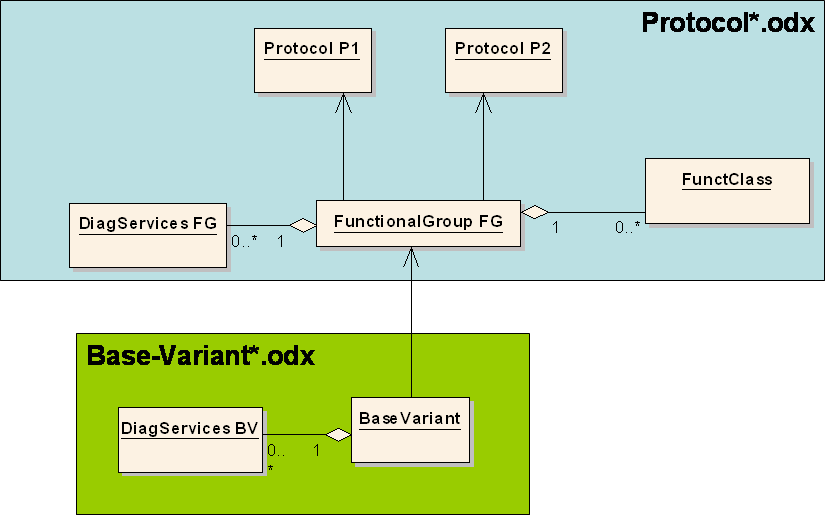
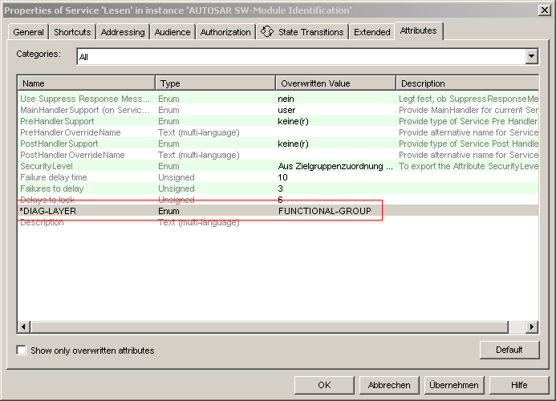

In order to pack common content into a central layer, several services and their used datatypes are not exported at the BASE-VARIANT anymore but into a separate file, containing several PROTOCOL-LAYERs and one FUNCTIONAL-GROUP. This separate file shall contain all relevant parts necessary for functional communication. I.e. one could basically take this File and perform communication without having the concrete DiagnosticData for the individual ECUs.
This FUNCTIONAL-GROUP holds the list of DIAG-COMMs and the DOPs required for the execution of the DIAG-COMMs. The selection which attributes are exported to the FUNCTIONAL-GROUP is done via the CANDela-Service-Attribute 'DIAG-LAYER'.
In addition all FUNCT-CLASSs are exported at the FUNCTIONAL-GROUP.

Export of services into FUNCTIONAL-GROUP

DIAG-LAYER attribute for services